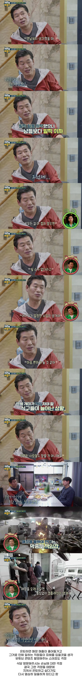

이연복이 밝히는 은퇴를 하지 못하는 이유.jpg
댓글
연복게이야 ㅋㅋㅋ

은퇴는 안된다 연복게이야...
부처눈엔 부처만 보이고...
Butcher hands up

스승사칭가지고 헛저격한거 대응이 너무 짜쳐서 뭘해도 못 보겠던데
그럼 보지마셈
그럼 안보면 됩니다.
연복개이 ㄷㄷ
이게 그 플라잉더치맨에는 선장이 필요하다인가 그거냐?
근데 언젠가는 은퇴해야할탠데 부하들이 잘 따라와야할탠데
후계를 키워야된다..
음식점은 후계를 잘 지우면 독립함
자기 장사하지 않으면 박봉, 내가 네임드가 되면 당연히 독립.
그렇다고 월급을 많이 주기는 힘든..
그렇다면 답은
내가 낳은 후계인데스
내 자식은 아빠처럼 살지 않겠다고 함

하긴...이연복이네 가게래! 하면서 사람들이 오기도 할꺼니까...
이연복의 황금옥좌 ㄷㄷ
사람이 활력을 가지려면 은퇴는해도 일은 해야함
마지막 짤 연복 게이라고 써있는줄알았네 ㅋㅋㅋㅋㅋㅋㅋㅋㅋㅋㅋㅋㅋ